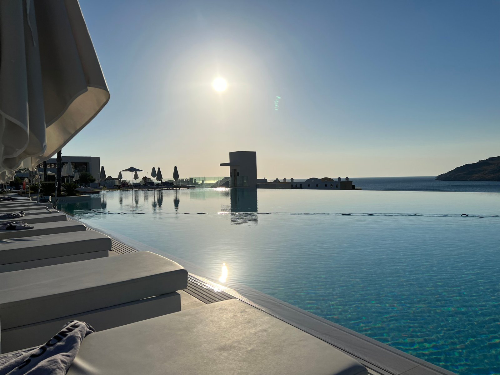
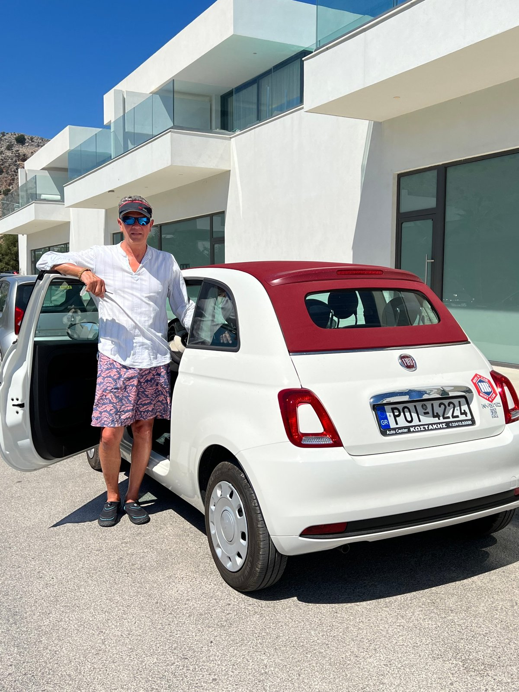
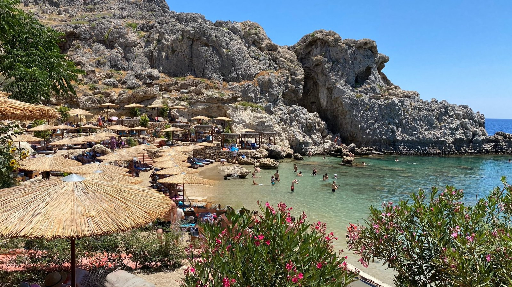
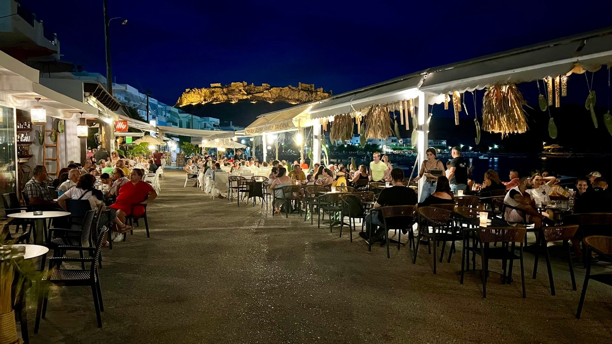
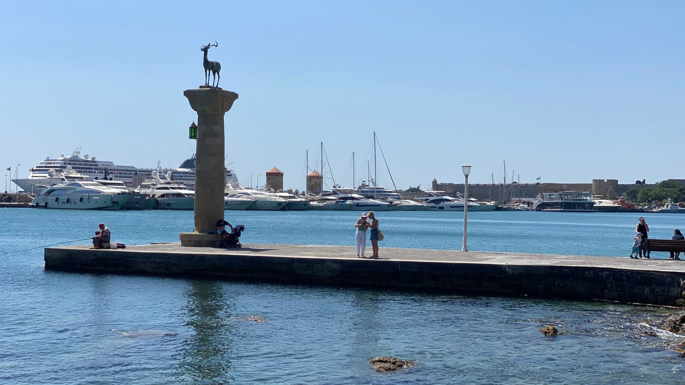
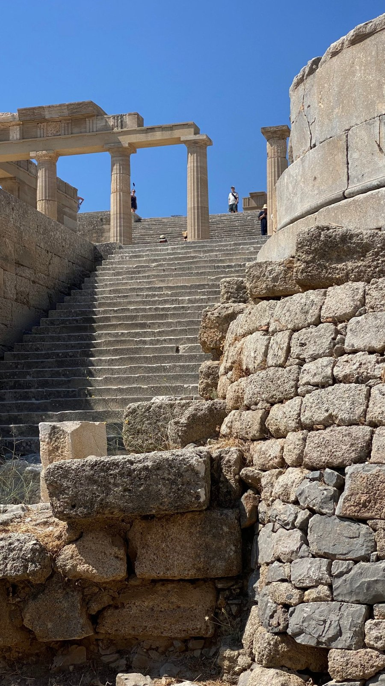

FIRST IMPRESSIONS – WELCOME TO THE ISLAND OF THE SUN
Rhodes has long had a reputation as one of Greece's favourite holiday islands. Think sunshine, beautiful beaches, big hotels, swimming pools and plenty of opportunities to do absolutely nothing. And sometimes, let's be honest, doing absolutely nothing is exactly what you need.
But there's rather more to Rhodes than sun loungers and all-inclusive wristbands.
The largest of Greece's Dodecanese islands, Rhodes is steeped in history, blessed with some beautiful coastline and home to some of the prettiest villages in the Aegean. It's also known as the Island of the Knights, thanks to its fascinating medieval past, and was once home to the legendary Colossus of Rhodes, one of the Seven Wonders of the Ancient World.
Our time on the island was relatively short, and we certainly didn't manage to explore everything it has to offer. We did, however, discover a few places that made us want to come back.
And one of them, in particular, completely stole our hearts.
WHAT RHODES LOOKS AND FEELS LIKE
Rhodes is an island of contrasts. Along the coastline you'll find established holiday resorts, long sandy beaches and hotels designed for people who want to spend a week doing very little. Head inland, however, and you'll discover traditional villages, olive groves, ancient ruins and a rather different side to island life.
The east coast is particularly attractive, with its sheltered bays, clear turquoise water and picturesque settlements. Lindos is undoubtedly one of its biggest attractions, and it's easy to understand why.
Whitewashed houses tumble down the hillside beneath an ancient acropolis, narrow pedestrianised lanes wind between little shops and cafés, and terracotta rooftops catch the afternoon sunshine. It's the sort of place that looks almost too pretty to be real.
And then there's Rhodes Town, which is quite another story. A beautiful mixture of medieval architecture, bustling streets, historic harbours and modern Greek life. It's somewhere that deserves considerably more than a quick afternoon visit.
OUR RHODES ADVENTURE – LINDOS, LITTLE BAYS AND A FIAT WITH A PROBLEM!
Lindos Grand Resort & Spa
We based ourselves at the Lindos Grand Resort & Spa, a five-star, adults-only hotel overlooking Vlycha Beach, approximately four kilometres from Lindos.
And what a place to stay!

The hotel was luxurious, the pool was fabulous, and the views across the Aegean were exactly what you'd hope for when booking a Greek island escape. With several restaurants, bars and a lovely spa, it was dangerously easy to convince ourselves that exploring could wait until tomorrow. We would happily recommend it if you're looking for a little luxury.
The Fiat with a problem
But eventually, even the most inviting infinity pool has to compete with the temptation of getting out and seeing what's around the corner. So we hired a car. Not just any car, but a rather lovely little soft-top Fiat 500, which seemed absolutely perfect for exploring the island.

Jacquie thought it was fabulous. I, on the other hand, at six-foot-two, was beginning to question the wisdom of the decision. Getting into it was one thing; actually fitting inside was quite another. The engine also had a rather unusual character, sounding less like a conventional car engine and more like a sewing machine. I half expected someone to start stitching a pair of curtains. Fortunately, it had a removable roof, which made life considerably easier.
Every cloud!
Lindos
Our first proper stop was Lindos, and it really is every bit as pretty as the photographs suggest. The village is protected from modern hotel developments in its historic centre, with no cars allowed through the narrow lanes. Instead, you'll find little boutiques, traditional shops, cafés and restaurants tucked into the whitewashed buildings.
We wandered the streets, soaked up the atmosphere and eventually found ourselves at Dionysos rooftop restaurant. The gyros were fabulous, but the view was arguably even better. Looking out across the village, with the ancient acropolis rising above us, it was one of those moments when you realise you're somewhere rather special.
Mikros Gialos and St Paul's Bay
Lindos is also home to some beautiful little bays. Mikros Gialos Beach was one of our favourite discoveries. Just a short walk from the village, this small sandy beach is tucked beneath the rocky landscape, with wonderfully clear water and a postcard-perfect setting.

It's a much smaller and more natural beach than some of the island's better-known stretches, so arrive early if you're visiting in high season. Bring your own beach essentials, as facilities are limited.
We also ventured around to St Paul's Bay, another beautiful spot overlooked by the famous white chapel. It's almost enclosed by the surrounding cliffs, creating a sheltered little bay with wonderfully clear water. If you're visiting Lindos, it's definitely worth the walk.
Charaki
Our next discovery was Charaki, a lovely little fishing village on the east coast.
This was much more our sort of place. A crescent-shaped bay, fishing boats bobbing in the water, waterfront tavernas and a relaxed atmosphere without the feeling of being swallowed up by a major holiday resort.

We found ourselves a waterfront table at a taverna, with a wonderful view towards Feraklos Castle sitting on the hill above the village. It was one of those simple Greek afternoons that you don't really want to end.
Charaki might not have the fame of Lindos, but we'd definitely put it on your list.
THE BEST THINGS TO SEE AND DO IN RHODES
Although we only scratched the surface, Rhodes has plenty to keep even the most enthusiastic explorer occupied. Here are some places we'd recommend adding to your itinerary, including a few that are still firmly on our own return-visit list.
1. Explore Rhodes Old Town
A UNESCO World Heritage Site and one of Europe's best-preserved medieval towns. Wander through the cobbled streets, visit the impressive Palace of the Grand Master and walk along the famous Street of the Knights. History is practically everywhere you look.
2. Visit Rhodes Town and Mandraki Harbour

The harbour is traditionally associated with the site of the ancient Colossus. Today, the entrance is marked by two stone deer columns, while historic windmills line the waterfront. Allow plenty of time to explore the town beyond the harbour, too. One day simply isn't enough to do it justice.
3. Climb the Acropolis of Lindos

Perched high above the village, the ancient ruins offer spectacular views across the coastline. Try to visit early or later in the afternoon to avoid the worst of the heat. Golden hour would be particularly special.
4. Swim at Anthony Quinn Bay
A beautiful rocky bay with emerald-green water, ideal for swimming and snorkelling. It's one of the island's most photographed coastal spots.
5. Discover Kallithea Springs
A historic spa complex famous for its Italian architecture, decorative mosaics and beautiful seaside setting. Even if you aren't interested in the history, the surroundings make it worth visiting.
6. Explore the Valley of the Butterflies
The Valley of the Butterflies is a beautiful nature reserve where thousands of Jersey tiger moths gather during the warmer months. It's particularly interesting between June and September, although sightings vary with the season.
Other places worth considering include Seven Springs (Epta Piges), the traditional village of Embonas, the beautiful sandy beach at Agathi and Prasonisi at the southern tip of the island, where two seas meet. Prasonisi is particularly popular with windsurfers and kitesurfers.
PRACTICAL TIPS FOR VISITING RHODES
- Getting around: Hire a car if you want to explore beyond the main resorts. Rhodes is a large island, and having your own transport gives you considerably more freedom. Read our car hire tips before you book, and if you're tall, think twice about that cute little soft-top.
- Where to stay: Lindos is ideal for atmosphere, beautiful surroundings and romantic evenings. Rhodes Town is a great base for history, restaurants and exploring the north of the island.
- When to visit: May, June, September and October are good options if you prefer slightly quieter conditions and more comfortable sightseeing temperatures. See our guide to when to go.
- Beaches: The east coast generally offers more sheltered swimming spots, while the west coast tends to be windier.
- Lindos: Visit the village early in the morning or later in the day. It can become extremely busy when the excursion boats arrive.
- Driving: Some roads are winding, particularly around the coastline and inland villages, so allow more time than your satnav might suggest.
OUR VERDICT – IS RHODES WORTH VISITING?
Absolutely. Rhodes is beautiful, but I think we've only really seen a small part of what it has to offer.
Lindos was our standout destination, Charaki was a lovely surprise, and Rhodes Town left us wishing we'd allowed considerably more time to explore.
Our visit was very much a relaxing holiday, with plenty of pool time and leisurely strolls into town. But these days, we're beginning to approach Greece a little differently.
Now we've retired, we're no longer restricted by how many days we can squeeze into an annual leave allowance. We can take our time, hire a car, disappear down the odd interesting-looking road and discover the places that don't necessarily appear on the holiday brochures.
And that's what we love about Greece.
Whether it's an island or the mainland, there's something about the people, the food, the culture and the pace of life that keeps drawing us back. We feel at home here. Somehow, we feel we've found our people and our happy place.
Would we return to Rhodes? Without question. Next time, we'd like to spend less time beside the pool and considerably more time exploring the island beyond Lindos.
Although, knowing us, we'll probably still find time for the odd rooftop gyros and a swimming pool or two. Just across the water, our Kos blog has more Dodecanese adventures.
Some things are simply non-negotiable!